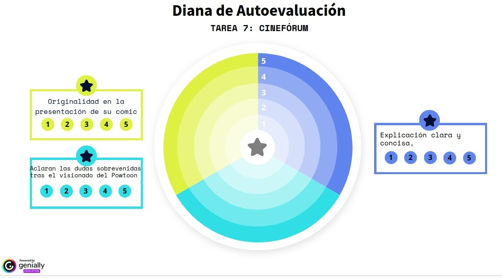

DIANA DE AUTOEVALAUCIÓN

1. Reflexión: ¿Qué evalúa cada una de las variables?
La diana plantea una evaluación tridimensional que equilibra la creatividad, la comprensión de contenidos y las habilidades comunicativas:
1. Originalidad en la presentación de su cómic (Escala 1-5):
- Qué evalúa: El pensamiento divergente, la creatividad estética y la capacidad de transposición narrativa (pasar del formato cinefórum/vídeo a un lenguaje de cómic). No solo mide el "dibujo", sino el ingenio para estructurar la historia de forma única.2. Aclaran las dudas sobrevenidas tras el visionado del Powtoon (Escala 1-5
- Qué evalúa: La escucha activa, la capacidad de análisis crítico y la resolución de problemas. Esta variable premia el hecho de que el alumnado no se quede con lagunas tras ver el recurso digital (Powtoon), sino que sea capaz de identificar lo que no entiende y resolverlo de forma autónoma o colaborativa.
3. Explicación clara y concisa (Escala 1-5): - Qué evalúa: La competencia en comunicación lingüística. Específicamente, la capacidad de síntesis (ir al grano sin divagar) y la claridad argumentativa al exponer o defender su trabajo ante el grupo.
OBTENCIÓN DE DATOS (RECOGIDA DE INFORMACIÓN)
Para implantar esta diana con éxito en el aula y obtener datos fiables, se recomienda combinar la autoevaluación del propio alumno con la coevaluación (entre iguales) y la heteroevaluación (del docente).
ESTRATEGIA DE RECOGIDA:
Soporte Digital/Físico: El alumnado puede colorear la diana en papel o usar una versión interactiva (como el propio Genially o un formulario de Google asociado) al finalizar la tarea.
El "Porqué" de la puntuación: Para evitar que se puntúen con un "5" por inercia, se les debe exigir una breve justificación cualitativa. Por ejemplo: "Me he puesto un 4 en claridad porque el grupo me entendió bien, pero me extendí un poco en el tiempo".
TRATAMIENTO DE POSIBLES VARIABLES E IMPREVISTOS
Al aplicar este instrumento con los estudiantes, es muy probable que surjan sesgos o imprevistos. Así se pueden gestionar:
Subjetividad o "Efecto Amigo" (Sesgos de puntuación)
- El riesgo: Que los alumnos se autoevalúen muy alto por timidez a autocriticarse, o que se puntúen bajo por baja autoestima.
- La solución: Calibración previa. Antes de la tarea, se define con ellos qué significa un 1, un 3 o un 5 en cada categoría. Por ejemplo: Un 5 en "Explicación concisa" significa ajustarse al tiempo límite de 2 minutos sin leer la pantalla.
Dificultades técnicas con el Powtoon o el Cómic - El riesgo: Que un alumno tenga una mala nota en "Aclarar dudas" simplemente porque el vídeo no cargó, o en "Cómic" porque no sabe usar la herramienta digital de dibujo.
- La solución: Separar la competencia técnica de la competencia cognitiva. Si hay fallos técnicos, se ofrece una alternativa analógica (cómic en papel, visionado del Powtoon en gran grupo en la pizarra de clase) para que todos tengan las mismas oportunidades de ser evaluados en lo que importa: su capacidad de análisis y originalidad.
Alumnado con dificultades de comunicación (Ansiedad social / NEAE)
- El riesgo: Que la variable "Explicación clara y concisa" penalice injustamente a alumnos con pánico escénico, timidez extrema o barreras lingüísticas.
- La solución: Flexibilidad en la obtención del dato. En lugar de exponer ante toda la clase, este alumnado puede grabar un breve audio/vídeo explicativo para el docente o exponer en un pequeño comité (grupos de 3 compañeros).